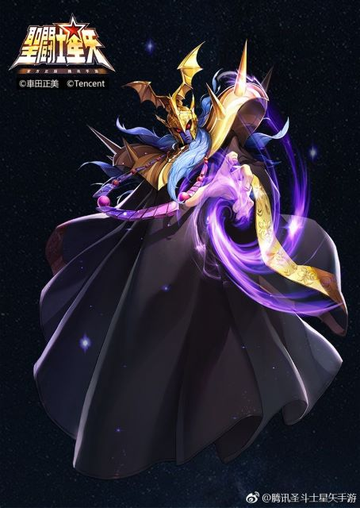
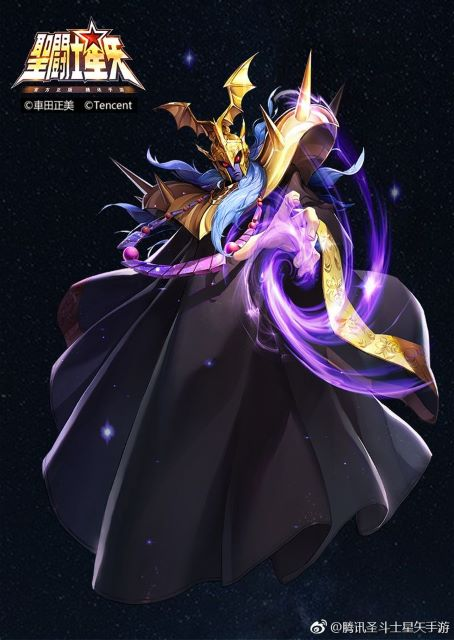

Santos Dorados

Primera casa - Mu De Aries
Caballero de la primera casa, portador de la armadura dorada de aries. Maestro de la herrería y reparación de las armaduradas de sus compañeros. De personalidad tranquila y pacifica, es de recurrir a la violecia en momentos extemos. De los mas inteligentes de los 12 calleros dorados. Conocedor de técnicas tanto ofensivas como la EXTINCION ESTELAR y defensivas como el MURO DE CRISTAL. Alumno del anterior caballero de aries y ultimo líder de los santos de Athena Shion de Aries.

Segunda casa - Aldebaran De Tauro
Guardian de la segunda casa del santuario. El más fuerte físicamente de los 12 caballeros dorados. El más sereno y alegre de sus compañeros. Su técnica conlleva en mantener una postura firme en la cual siempre tiene su defensa en alto y al momento de ejecutarla libera el GRAN CUERNO un golpe de energía a tal velocidad que sus enemigos no pueden esquivar, concediéndole una victoria inmediata.
 

Tercera casa - Saga De Geminis
Adorado como un dios nacido en la tierra, Saga es el caballero guardian de la tercera casa del santuario. Es considerado como el mas poderoso de sus compañeros como todos los geminis que nacieron a traves de la historia. A pesar de su personalidad bondadosa, Saga oculta un lado oscuro que le es dificil de controlar, lo que a causado el sufrimiento de sus pares por obtener el poder absoluto del santuario. Tras perder la oportunidad de convertirce el sucesor de Shion de Aries como proximo Gran Patriarca, su lado oscuro se apodera de el, asesinando a su maestro y querer matar la reencarnacion de la diosa athena, pero Aioros de Sagitario lo descubre en el acto y rescata la bebe haciendo que huya con ella. Saga con las tunicas y mascara del patriarca tilda a Aioros de traidor haciendo que sus compañeros le de cazan y acaben con el, dejandolo como el lider del santuario. Saga posee poderosas habilidad como SATAN IMPERIALque puede corromper la mente de su victima.OTRA DIMENSION capaz de alterar el espacio a su alredor y enviar a sus victimas a otra realidad o lugar. Y su tecnica mas poderosa EXPLOSION DE GALAXIAS
Cuarta casa - Mascara De Muerde De Cancer
El caballero que rige la Cuarta casa, conocido como el mas despiadado, es Mascara De Muerte. Con un corazon lleno de maldad, Mascara le gusta sembrar el caos, asesina por placer sin importar quien sea su victima, sea inocente o no, tras hacer dichoso acto transforma los rostros de sus victimas en mascaras que pasan hacer parte de la decoracion de susodicha casa del santuario. Mascara tiene la habilidad ONDAS INFERNALES donde concentra toda su energia en la punta de su dedo y la desprende como un rayo blanco, que al impartar contra su rival lo envuelve en un aura que le desprende el alma de su cuerpo, dejando un cuerpo inerte y el alma el llevada Colina de Yomotsu, la frontera del mundo del mundo de los vivos y el mundo de los muertos
Quinta casa - Aioria De Leo
Noble y valiente, Aioria se encarga de defender la quinta casa del santuario. Siempre dispuesto a luchar por la justicia tiene un carácter calmado y servicial la mayoría del tiempo, es fácil de tratar entre sus camaradas, pero sin embargo en situaciones de peligro o una amenaza, toma un carácter impulsivo, violento y agresivo, que no dudarán en atacar ante la menor provocación. Hermano menor del Caballero Aioros De Sagitario, que tras ser tildado de traidor buscara la forma de limpiar el nombre de su hermano mayor. Aioria se centra en utilizar la electricidad como medio de ataque, concentrado grandes cantidades de energía en su puño y liberando todo en una onda choques que ataca a todo lo que se cruza desde varios ángulos, ese ataque se llama PLASMA RELAMPAGO.
Sexta casa - Shaka De Virgo
El hombre mas cercano a los dioses, Shaka lidera la sexta casa. Sabio e inteligente Shaka tiene un excelente manejo de su cosmos, privandose su sentido de la vista shaka logra cumular grandes cantidades de energia que al momento de abrirlos es capaz de liberar su habilidad mas poderosa, EL TESORO DEL CIELO, con la capacidad de borrarle los 5 sentidos a sus enemigos. Tambien cuenta con una habilidad que le permite entrar en batalla sin la necesidad abrir los ojos que es LOS 6 SAMSARA que le permite al inidividuo desprender su alma, dejando un cascaron vacio y reencarnar dicha alam en uno de los 6 mundos que se le ofrece, dependiendo tambien de los actos que realizo en vida.

Septima casa - Dohko De Libra
El legendario caballero de Libra, es el encargado de vigilar la Torre Masei donde alverga las almas de Los Espectros, el ejercito de Hades, hasta que se rompa el sello que los contiene. sobrevivio a la guerra santa de hace 243 años contra el ejercito de Hades y fue bendecido con el Misopethamenos habilidad de los dioses que permite dalre a los mortales para que su corazon se mantenga joven haciendo que solo lata una vez al dia, transformando los 243 años en dias. Dohko tambien es el encargado de portar las armas de Libra, que se compone en un par de escudos, espadas, lanzas, tonfas, nunchacos y barras triples, que solo se le tiene permitido el uso en casos de extrema necesidad, ya que Athena le prohibe el uso de armas a sus caballeros. Dohko posee una de las habilades mas poderosas LOS 100 DRAGONES DE ROZAN manifestando una orden de dragones como una onda de ataques consecutivos.
Octava casa - Milo De Escorpio
Milo siempre está seguro de sí mismo, más tranquilo que la mayoría de los otros Santos Dorados. Él es de una naturaleza violenta y apasionada, pero siempre preserva el control de sí mismo. Milo jamás muestra sus emociones, siempre las disimula detrás de una máscara de inalterabilidad y absoluta calma. Es esta misma calma que lo hace un temible adversario durante el combate. Milo jamás duda y no conoce el titubeo. Sus pensamientos y sus actos están armonizados perfectamente. Está sincronización es particularmente obvia durante el combate. Milo se centra en el combate cuerpo a cuerpo, una de sus habilidades es Restriccion, usandodo sus poderes psiquicos paraliza a sus enemigos. Despues tiene su ataque principal LA AGUJA ESCARLATA, con la uña de su dedo indice con forma de aguijon Milo perfora el cuerpo de sus enemigos ,atacando al sistema nervioso generando una paralisis y sangrado leve, formando en el la constelacion de Escorpio con quince ataques rapidos, para asi al finalizar lanzar su ataque definitivo LA AGUJA ESCARLATA ANTARES que causara una muerte inmediata.
Novena casa - Aioros De Sagitario
Con un gran sentido del deber, poder, conocimento y sabiduria, Aioros era el legitimo sucesor del patriarca Shion. Tras la rebelion de Saga De Geminis, Aioros escapa con la reencarnacion de la diosa Athena en brazos mientras es perseguido por los que alguna vez llamo compañeros. Aioros tuvo un enfrentamiento contra su compañero Shura De Capricornio que fue envido a matarlo, sin la intencion de pelear contra el Aioros es gravemente herido pero logra escapar con la bebe y ponerla a salvo entregandosela a un turista que cuidaria de ella. Aioros posea habilidades extraordinarias como el RELAMPAGO ATOMICO donde concentra toda su energia en su puño y la libera como un rayo. Y su tecnica mas poderosa que es gracias a su armadura es LA FLECHA DORADA DE SAGITARIO tiene la capacidad de matar hasta un dios.
Decima casa - Shura De Capricornio
Shura es quien se encarga de defender la casa de Capricornio. De áracter inflexible y honorable, consideraba a Aiolos y Saga sus superiores, mas fue indignado al declarársele traidor al caballero de Sagitario. Desde entonces, acató su lealtad hacia saga a pesar de conocer sus intenciones. Shura es devoto a Saga de Gemini por su ideal de proteger al más fuerte para gobernar el mundo. El repertorio de tecnicas que utiliza son: Salto de Piedra es una técnica del Santo de Capricornio que se basa en el uso de sus piernas para contrarrestar un ataque aprovechando la fuerza de la técnica de su oponente o simplemente dando una poderosa patada al adversario. Y la tecnica que mas lo identifica es EXCALIBUR, utilizando su brazo derecho como una espada lanza cortes que puede separar cosas a nivel molecular.
Onceava casa - Camus De Acuario
Camus es el más frío de los doce dorados, pero su frialdad no se basa en suprimir sus sentimientos si no en controlarlos. Nunca hemos visto a Camus hacer más que un gesto de esfuerzo, durante la batalla no se exalta, no grita, no se esfuerza, siempre permanece calmado, frío y calculador. Lucha por lo que cree correcto y está dispuesto a todo para defender sus ideales. Camus utiliza el frio como un arma. Su ataque basico es POLVO DE DIAMANTES rafaga de aire frio capaz de congelar. Su segunda tecnica es el ATAUD DE HIELOquien sea que fuese encerrado ahi no podra escapar y vivira eternamente congelado. Y la tecnica mas poderosa de Camus, capaz de llegar al Cero absoluto LA EJECUCION AURORA, capaz de destruir las armaduras doradas y todo que se interponga en su camino.
Doceava casa - Afrodita De Picis
Considerado como el caballero mas hermoso de los 88 caballerosde Athena, Afrodita es el ultimo guardian de las 12 casas dentro del santuario. Se muestra como un guerrero orgulloso de su fuerza, fue leal a Saga, pues cree que sólo el más fuerte es capaz de mantener la paz, así como ha habido paz en el Santuario durante el mandato de Saga. Del mismo modo, también es un fiel creyente de la ley del más fuerte, en la que el más débil debe doblegarse ante el más poderoso, y en lo sucesivo termina por aceptar el mandato de Saga, siendo uno de los pocos Caballeros dorados, junto con Mascara y Shura, que saben acerca de la conspiración y usurpación de su colega. Afrodita se centra en el uso de tres tipos de rosas que pasan a ser parte de su repertorio de habilidades. La primera de ellas es LA ROSA DEMONIACA REAL, que clavarse al enemigo inyecta un veneno que ataca al sistema nervioso que va privando a la victima de sus 5 sentidos. Su segunda rosa es LA ROSA PIRAÑA, con finalidad de destruir todo a lo que impacte. Y la ultima rosa y la mas mortal es LA ROSA SANGRIENTA que absorbe la sangre al impactar.